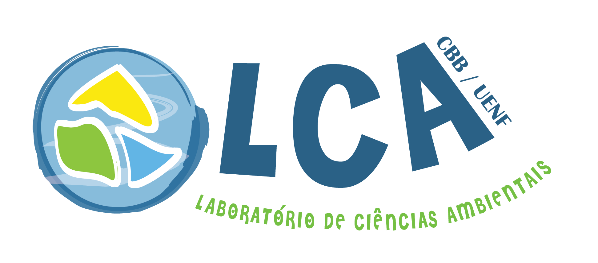

|  |
UENF - CBB - Laboratório de Ciências Ambientais (LCA)
Professor: Cesar A. M. M. Cordeiro
Neste curso, serão explorados os usos de ferramentas em ciência colaborativa e construção de bases de dados abertos em estudos ecológicos, desde a aquisição de dados em repositórios existentes até a inserção de dados novos nestes repositórios. Tópicos contemplando as principais ferramentas aplicadas a controle de versão em documentos e roteiros de análises (e.g. plataformas Git e GitHub), modelos de bancos de dados e repositórios mais utilizados no campo da ecologia serão debatidos durante o curso. Também serão abordados padrões de construção de bases de dados (e.g. Darwin Core), etapas de verificação de qualidade de dados, noções de compartilhamento de arquivos e utilização de ferramentas para publicação e visualização de dados online.
Pré-requisitos: Espera-se que os estudantes
matriculados tenham familiaridade com a linguagem R.
A disciplina será conduzida por meio de plataforma digital com todas as aulas expositivas sendo realizadas de forma síncrona permitindo a interação em tempo real com o professor. Esta parte da disciplina contará como 70% da carga horária indicada. Atividades assíncronas somarão 30% da disciplina sendo associadas à análise crítica de artigos científicos para a preparação de apresentação em forma de seminário, a ser utilizado como a primeira avaliação. Os participantes serão separados em grupos para a apresentação dos artigos a partir do segundo dia do curso, sendo o número de apresentações dividida igualmente entre os dias restantes da disciplina. Os apresentadores serão sorteados no dia da apresentação (um apresentador e um ou mais debatedores), tendo todo participante 24 horas para preparação da apresentação e elaboração de, ao menos, uma questão sobre o tema. A apresentação consistirá em uma breve explicação do artigo indicado (5 minutos) ficando a critério do participante a utilização de recursos audiovisuais ou apenas exposição oral. Os temas dos seminários incluirão: metodologia de organização de dados, data papers, big data e política de uso de dados, sendo os artigos recomendados pelo professor e fornecidos na plataforma compartilhada (Google drive). Os debatedores deverão propor uma pergunta cada ao apresentador e à turma, podendo também ser indicada uma crítica ao artigo, aplicação ou exemplo local da questão em debate. Os dados utilizados durante a disciplina serão adquiridos diretamente de servidores abertos durante as aulas síncronas, e as rotinas de exemplo serão compartilhadas com os estudantes também via plataforma digital (Google drive).
A segunda avaliação consistirá em um trabalho final autoral
confeccionado como um roteiro reprodutível de aquisição, polimento e
visualização de dados públicos ou dos participantes. Todas as práticas
realizadas serão acompanhadas na rotina comentada utilizada nas práticas
adicionada das observações dos participantes. A frequência dos
estudantes será contabilizada ao início de cada período das aulas.
Baker K, Millerand F (2012) Infrastructuring ecology: challenges in achieving data sharing. In: Collaboration in the New Life Sciences. (eds) Parker J, Vermeulen N, Penders B. Ashgate. Disponível em: http://interoperability.ucsd.edu/docs/10BakerMillerand_InfrastructuringEcology_old.pdf
Chapman AD (2015). Princípios de Qualidade de Dados. Versão 1.0 pt em Português lançada em abril 2015 e traduzida para pelo Nó Português do GBIF (www.gbif.pt) e pelo representante brasileiro do GBIF, SiBBr (Sistema de Informação sobre a Biodiversidade Brasileira, www.sibbr.gov.br). Versão original em Inglês lançada em jul 2005. Copenhagen: Global Biodiversity Information Facility. 81 pp. ISBN: 87-92020-58-5. Disponível on-line em http://www.gbif.org/orc/?doc_id=5990.
Cooper N, Hsing PY (2019) Reproducible code – guides to better science. British Ecological Society. Disponível em: https://www.britishecologicalsociety.org/wp-content/uploads/2019/06/BES-Guide-Reproducible-Code-2019.pdf
Hampton SE et al. (2013) Big data and the future of ecology. Front Ecol Environ 2013; 11(3): 156–162, https://doi.org/10.1890/120103
Harisson K (2019) A Guide to Data Management in Ecology and Evolution - guides to better science. British Ecological Society. Disponível em: https://www.britishecologicalsociety.org/wp-content/uploads/Publ_Data-Management-Booklet.pdf
König C, Weigelt P, Schrader J, Taylor A, Kattge J, Kreft H (2019) Biodiversity data integration—the significance of data resolution and domain. PLoS Biol 17(3): e3000183. https://doi.org/10.1371/journal.pbio.3000183
Powers SM, Hampton SE (2019). Open science, reproducibility, and transparency in ecology. Ecological Applications 29(1):e01822. https://doi.org/10.1002/eap.1822
Wieczorek J, Bloom D, Guralnick R, Blum S, Do ̈ring M, et al. (2012) Darwin Core: An Evolving Community-Developed Biodiversity Data Standard. PLoS ONE 7(1): e29715. https://doi.org/10.1371/journal.pone.0029715
Version Control with Git - http://swcarpentry.github.io/git-novice/
Darwin Core Archive - https://obis.org/manual/dataformat/
Colabore, compartilhe, e cite as fontes!